Thought-Level Beam Search for Reasoning / 面向推理的思维级束搜索
这篇论文研究一个很具体的测试时扩展问题：当大推理模型已经可以并行生成数百条长思维链时，怎样在单卡的并发与 KV cache 上限内，把有限计算从低潜力轨迹转移到更可能答对的部分轨迹。作者把这套推理算法命名为 Gambit。一作 Lijie Yang 的主机构是 Princeton University，合作机构包括 MIT CSAIL 与 Meta AI；论文以 COLM 2026 conference paper 形式公开。论文入口：arXiv:2608.08020。代码仓库已核验：Dao-AILab/Gambit。
在固定硬件预算下，独立并行采样把大量算力浪费在低潜力轨迹并压满 KV cache；只剪枝虽释放内存，却让并发槽位闲置，也无法把新增概率质量主动移向更有希望的前缀。关键已不再是多生成多少条轨迹，而是如何持续把有限计算重投到正确答案更可能出现的局部搜索空间。
1. 背景和问题
1.1 从“多采样”转向“分配计算”
大推理模型的标准测试时扩展通常是 self-consistency：针对同一问题独立采样许多完整 reasoning trace，再以多数票聚合答案。它简单、易批处理，却默认每条轨迹直到结束都值得占用等量资源。论文用 Qwen3-8B 与 vLLM 举例：在一张 NVIDIA B300 上为一道 AIME-2025 问题完成 512 条轨迹可能需要数小时，即使如此，最难样本仍会失败。浪费不仅来自错误答案多，还来自每条独立轨迹重复计算近似的前缀，并各自持有不断增长的 KV cache。于是作者将测试时推理形式化为“对部分轨迹分配计算”的问题：系统要同时决定哪些前缀值得 checkpoint、释放出的槽位给谁、以及如何不让动态选择破坏 GPU 连续批处理。
只做 score-based pruning 并没有完成这次范式转换。STEP、DeepConf 一类方法能根据隐藏状态或置信度提前终止低分轨迹，确实降低 token 和内存压力；但被剪掉的请求不再补回，活跃 batch 会随解码持续缩小。更关键的是，剪枝只是从原先的样本集合里做减法。若基础模型一开始几乎没有产生正确轨迹，负向过滤只能留下一个更小但同样偏斜的集合，不能主动制造新的正确延续。Gambit 的出发点正是把“释放资源”与“重新采样”绑定：剪掉低分轨迹的同时，立即从高分前缀创建新分支。
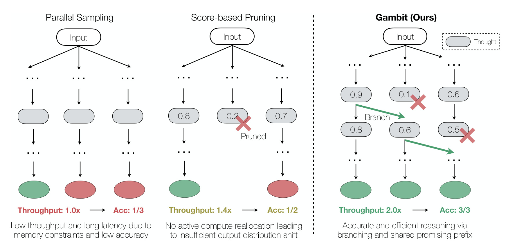
Figure 1 把差异画成三种拓扑。左侧 parallel sampling 的三条路径彼此独立，吞吐标成 1.0×，最后只有 1/3 正确；中间 pruning 删除 0.2 分路径后，吞吐短期改善到 1.4×，但少掉的分支没有替代者，答案集合仍只有两条，正确率是 1/2。右侧 Gambit 在删去 0.1 与后续 0.5 的轨迹时，从 0.9、0.6 等高分节点继续分叉，保持三条活跃路径，并让三个叶子都落在正确答案区域。图中 2.0× 与 3/3 是概念化示意，不是主实验统计；它要表达的是同一份被释放的计算，空置与重投会导致完全不同的输出分布。
因此应把这张图读成资源路由示意，而不是三种方法在统一实验中的数值曲线；真正的量化结论仍要回到后文主表。
1.2 为什么中间前缀值得复用
Gambit 能成立还依赖一个经验前提：失败轨迹在出错前往往包含相当长的正确推理，成功与失败路径也可能共享严谨的中间状态。如果只有最终答案，系统无法回收这段已付出的计算；有了 thought boundary 的隐藏状态评分与 KV checkpoint，系统可以保留一个“目前看起来有希望”的推理地基，让多个孩子从分歧点继续，而不必重新生成整个前半程。不过，部分前缀的分数天然有噪声。早期推理信息不足，一个暂时低分的路径可能后来修正，一个暂时高分的路径也可能把共同错误复制给全部孩子，所以论文同时引入 warmup 和有限 beam，而不是无限围绕 Top-1 复制。
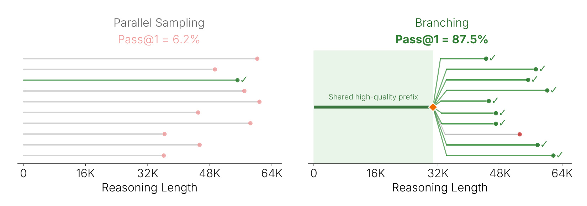
Figure 2 选取 AIME 2025 Q27：64 条独立轨迹只有 6.2% pass@1；在大约 32K reasoning length 处暂停、用轻量隐藏状态 scorer 排序，再从第一名前缀生成 64 个延续，pass@1 达到 87.5%。绿色矩形是孩子共同继承的 KV cache，因而作者称内存消耗约减半。这个 14× 差异证明“好前缀后面的条件成功率”可能远高于从提示词重新抽样，但它是一个困难题上的动机案例，不能直接当作全数据集平均提升。它真正支持的是搜索空间不均匀：计算应该随中间证据动态迁移，而不是平均分给所有根轨迹。
绿色共享区还说明，分叉收益与 serving engine 能否复用前缀状态不可分割；没有低成本 KV 克隆，准确率动机未必能变成系统收益。
1.3 内存拥堵与硬件饥饿是一对相反故障
长链推理的系统瓶颈不只看总 token。并行采样在开始时让大量请求同时进入 GPU；随着上下文增长，KV cache 很快触顶，vLLM/SGLang 只能把部分请求排队，导致端到端延迟急升。剪枝路线减轻了这项压力，却从另一侧破坏利用率：被终止的轨迹不补充，batch 越来越小，后半程 GPU 不能保持足够并行度。理想策略要把物理内存峰值压在预算内，同时令逻辑活跃轨迹数基本恒定。也就是说，不能简单追求“显存越低越好”，而要让显存占用、有效吞吐、排队和最终准确率共同落在合适区域。
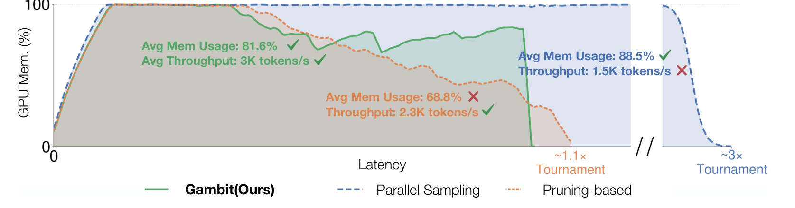
Figure 3 在 HMMT-25 Q7、batch size 256 下画出三种行为。蓝色并行采样几乎一直占满内存，但 KV 拥堵把 tournament 完成时间拉到约 3×，吞吐只有 1.5K token/s；橙色 pruning-based 路线的平均显存约 68.8%、吞吐 2.3K token/s，却因并发持续衰减而没有充分使用设备；绿色 Gambit 平均显存 81.6%，吞吐 3K token/s，并在约 1.1× 时间完成。这里最重要的不是 81.6% 比 68.8% 更高，而是绿色曲线在不进入蓝色拥堵区的前提下长期保留足够活跃请求，正好对应“零和 prune-and-branch”的系统目标。
因而显存利用率必须和排队时间、活跃轨迹数及有效吞吐联合解释，单独追求更低或更高显存都可能误导。
2. 方法
2.1 受限目标与 thought-level tournament
符号解释：$P$ 是问题提示，$\pi$ 是对部分 reasoning trajectory 的 thought-level 计算分配策略，$A_{\pi}(P)$ 是该策略最终聚合的答案，$y^{*}$ 是真值；$\Omega(\pi)$ 表示执行期间的峰值计算与内存成本，$B$ 是硬件预算。式 (1) 与经典 token-level beam search 的根本区别是，后者通常追求序列似然，而这里直接把有限并发和 KV cache 放进约束，优化的是最后答对的概率。论文用最大并发轨迹数 $C$ 表示主要物理容量，并要求搜索期间的逻辑活跃池不因剪枝不断萎缩。
轨迹按双换行分隔为 thoughts，$\tau_i=(s_1,\ldots,s_n)$。每到 thought boundary，系统读取该位置的最后层隐藏状态 $h_{i,j}$，通过轻量 scorer $f_{\theta}$ 更新运行平均分：
符号解释：$h_{i,j}$ 是第 $i$ 条轨迹第 $j$ 个思维边界的隐藏状态，$f_{\theta}$ 输出这个局部状态对应的质量信号，$n$ 是已经观察的 thought 数，$\bar{s}_i$ 是排序使用的累计平均。平均化能降低某一个局部 step 的波动，却不能消除早期信号不完整的问题，因此一个新轨迹至少生成 $w$ 个 token 后才进入可分叉集合 $\mathcal{B}$；检查不是每 token 触发，而是每 $\Delta$ 个 thought 进行一次 tournament。
符号解释：$\tau^{(1)},\ldots,\tau^{(N)}$ 已按 $\bar{s}$ 从高到低排序；式 (2) 只让最多 $C-N$ 个成熟父轨迹填空，式 (3) 则将 bottom-$K$ 终止并从 top-$K$ 各建一个孩子。孩子通过 prefix caching 继承父节点的物理 KV block，只为分歧后的新 token 支付计算；可调温度用于避免孩子完全同质。核心不变量是每删一条就补一条，因此满容量 tournament 前后逻辑活跃数仍为 $C$；搜索得到的不是更小的幸存集合，而是被评分信号主动重塑的轨迹总体。
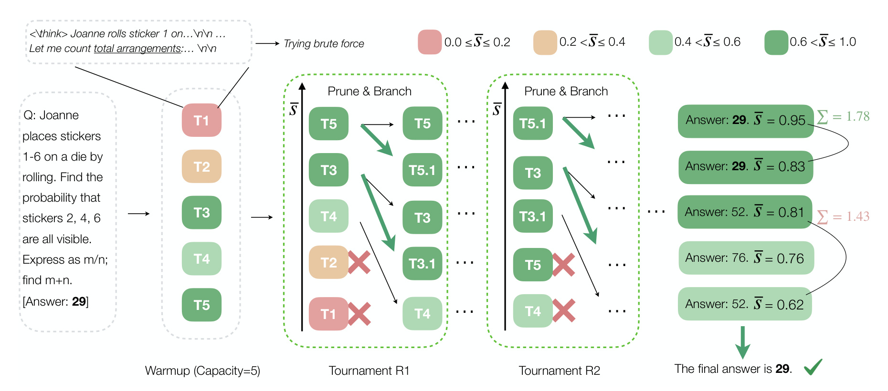
Figure 4 用 $C=5,K=2$ 的 AIME 示例串起全过程。Warmup 先产生 T1-T5，颜色深浅表示运行平均分；第一轮将低分 T2、T1 剪掉，从高分 T5、T3 分出 T5.1、T3.1，第二轮再做同样交换。绿色箭头对应孩子继承父前缀，黑色细箭头代表原轨迹继续解码。末端出现两个答案 29，其分数和 1.78；两个答案 52 的和为 1.43，所以最终选 29。图中每轮仍有五个逻辑位置，正是式 (3) 的零和含义；同时它也显示分叉会制造相关样本，最终聚合不能再被理解为 256 个相互独立的 Bernoulli trial。
从信息流看，评分只决定谁退出、谁成为父节点，生成模型参数在运行中不更新；从资源流看，孩子复用父节点的 KV 前缀，只申请分歧后的增量块；从终止流看，完成轨迹进入集合 $F$，未完成轨迹继续参加后续轮次。训练阶段只准备 scorer，真正的搜索、克隆和加权投票都发生在推理阶段，因此 Gambit 是推理算法而不是后训练方法。
2.2 Scheduler View 与 Tree View 解耦
如果逻辑搜索直接读取 serving engine 的物理运行状态，会出现论文强调的反馈故障：显存接近上限时，调度器先驱逐一个请求；搜索看到 $N<C$，立刻进入式 (2)，可能又从 Top-1/2 分叉；新孩子再次造成压力，系统便围绕极少数前缀重复分叉，既丢失多样性，也让一个早期判断错误扩散成整棵树的错误。Gambit 因而将状态拆成两个视图。Scheduler View 只记录当前真正持有 KV block、正在 GPU 上生成的轨迹；内存紧张时可以把最低分请求物理驱逐。Tree View 维护搜索拓扑和逻辑 active 标志，被物理驱逐的请求变成 ghost trace：不再生成 token、不占 KV 内存，却暂时仍计入逻辑容量。
tournament 的容量检查只看 Tree View，所以一次物理驱逐不会把 $N=C$ 错报为欠容量；下一轮仍执行平衡的 bottom-$K$/top-$K$ 交换，ghost 通常因低分进入 bottom-$K$，此时才从逻辑树永久删除。终止条件则反过来看 Scheduler View：物理运行数为零，或已经完成 $C$ 条轨迹时停止。这种设计把“设备为了不排队而临时腾内存”与“搜索认为哪个前缀应该被淘汰”分开。它没有消灭内存压力，而是防止物理调度事件篡改算法的探索—利用比例。代价是实现必须让 KV clone、ghost 生命周期、完成计数和树节点身份保持一致；若 serving engine 不能廉价 checkpoint/clone，这个逻辑优势未必能转成端到端收益。
2.3 终止聚合与 history-aware scorer
符号解释：$a$ 遍历抽取出的候选答案，$a_i$ 是第 $i$ 条完成轨迹的答案，$\bar{s}_i$ 是其 thought-level 平均质量，$a^{*}$ 是加权总分最高者。该聚合利用 scorer 区分“数量多但低质量”和“数量少但证据强”的答案；边界也很明确：同一父前缀的孩子高度相关，若 scorer 校准偏移，相关高分分支可能重复放大同一个错误，不能把权重和当作独立置信区间。
主实验为控制变量，Gambit 与 STEP 使用完全相同的现成两层 MLP scorer。附录另外训练 history-aware sequence scorer，检验搜索拓扑是否依赖某一种评价器。每条训练轨迹按双换行取得边界隐藏状态 $h_1,\ldots,h_T$，最终答案只提供一个二值正确标签。其计算为：
符号解释：$W_{\mathrm{in}}$ 把 LRM 的最后层状态投影到小型 scorer 空间，因果 SequenceTransformer 用 RoPE、SwiGLU 与 causal attention 让 $z_t$ 聚合截至 $t$ 的全部历史，$w_{\mathrm{out}}$ 和 sigmoid 将其映射成正确概率 $\hat{y}_t$。相较逐步 MLP，它能识别“局部句子合理、整条推导已经矛盾”的情况；因果 mask 确保推理时不会偷看未来 thought。
符号解释：$\mathcal{D}$ 是带最终正确性标签的轨迹集，$T$ 是该轨迹的 thought 数，$y\in\{0,1\}$，只有 $\hat y_T$ 接收直接监督。这样迫使 attention 为全历史做 credit assignment，但也形成一项训练—推理差异：训练目标监督完整轨迹末端，Gambit 运行时却会查询不完整前缀的末端 logit。warmup 能缓解、不能消除这种分布偏差；因此 scorer 是计算路由的近似指南，而不是正确性的证明器。
3. 实验结果
3.1 设置与主结果：同一硬件预算下比较搜索拓扑
实验覆盖 Qwen3-4B-Thinking-2507、DeepSeek-R1-0528-Qwen3-8B 与 Phi-4-reasoning-plus-14B，任务包括 AIME 2025/2026、HMMT 2024/2025 和研究生科学问答 GPQA-Diamond。所有方法运行在单张 275GB NVIDIA B300、vLLM serving engine 上，每题最多完成 $N=256$ 条轨迹。主配置固定为 $C=256,K=16,\Delta=200,w=12{,}000$，并使用显存 hard floor。基线包括无权 SC、相似度去重 Slim-SC、离线阈值 DeepConf 和内存触发剪枝 STEP。尤其重要的是，主表中的 STEP 与 Gambit 共用同一个两层 MLP scorer，所以二者差异主要归因于“只删”还是“删后从高分前缀补回”的搜索拓扑，而不是评价器更强。
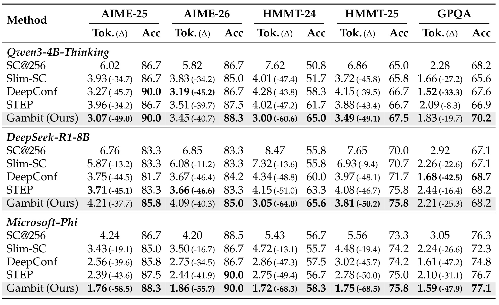
Table 1 的列需要成对读：每个数据集先是每题百万 token 及相对 SC 的降幅，再是准确率。Qwen3-4B 上，Gambit 在 AIME-25 达 90.0%，HMMT-24 为 65.0%，相对同 scorer 的 STEP 分别高 3.3、3.3 个百分点；相对 DeepConf，HMMT-24 高 6.7、GPQA 高 2.6。DeepSeek-R1-8B 上，Gambit 在 HMMT-25 与 STEP 同为 75.8，但 HMMT-24 token 从 STEP 4.15M 降到 3.05M。Phi-4 上 token 优势最稳定：HMMT-25 从 SC 5.56M 降到 1.75M，即 -68.5%，同时准确率从 73.3 升到 75.8。表也给出反例：DeepSeek 的 AIME-25/26 上 Gambit token 高于 STEP，GPQA 准确率与 STEP 持平，说明“严格占优”更适合描述总体准确率—成本前沿，而非每个单元格都最佳。
3.2 准确率、token、延迟与完成吞吐
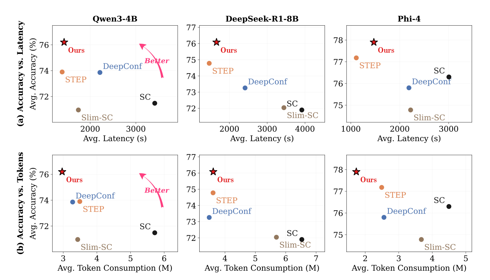
Figure 5 将五个基准平均后，上排看 latency、下排看 token。三种基础模型中，红星 Gambit 都处在最高平均准确率附近；在 token 轴上又明显位于左侧，显示共享前缀确实降低总体生成量。在 latency 轴上，它通常接近 STEP 而远快于 SC，但不是所有模型都比 STEP 更靠左，尤其 Phi-4 的 STEP 平均延迟更低。由此更准确的结论是：Gambit 用略高或接近 aggressive pruning 的墙钟时间，换取更大的完成轨迹池和更高平均准确率，同时显著降低相对 SC 的 token。图上的“Better”方向是多目标偏好，不代表任意硬件或任意准确率权重下都存在单一最优解。
部署时仍需按业务对准确率、token 成本与尾延迟赋权，图中的“Better”方向并不自动给出唯一工程最优点。
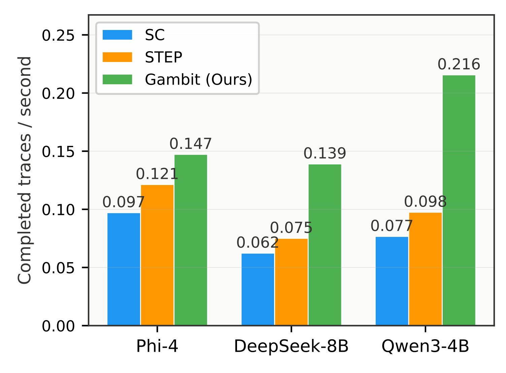
Figure 6 量化每秒真正完成多少条轨迹。Phi-4 上 SC/STEP/Gambit 分别约 0.097/0.121/0.147，DeepSeek-8B 为 0.062/0.075/0.139，Qwen3-4B 为 0.077/0.098/0.216。Qwen 的 Gambit 是 STEP 的约 2.20 倍、SC 的约 2.81 倍；DeepSeek 也接近 STEP 的 1.85 倍。这个指标比 token/s 更贴近最终投票需要的有效样本，因为 STEP 即便单条活跃请求解得快，后半程 batch 缩小会减少完成轨迹数。Gambit 通过补回孩子保持 productive concurrency，但由于孩子共享前缀，完成数增加不等于产生同等数量的独立推理证据。
3.3 前缀复用为何省 token，却不等比例省延迟
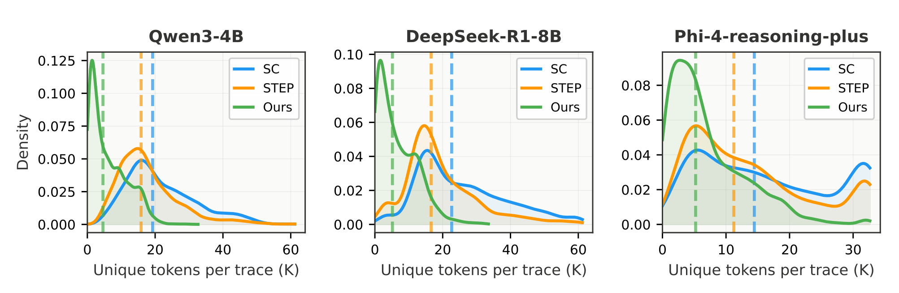
Figure 7 统计 unique tokens，也就是排除继承前缀后，每个完成孩子真正新生成的 token。三模型的绿色 Gambit 分布都显著左移；作者给出的 Phi-4 中位数约 5.2K，而 SC 为 14.5K、STEP 为 7.7K。Qwen 与 DeepSeek 上绿色峰值也集中在更短的新增长度。它直接验证 prefix-cache reuse 的边际成本：一个 30K token 的优质前缀若产生多个孩子，后续探索只需要支付分歧后的新增 token，而独立 SC 会为每个样本重算前 30K。需要注意，unique token 是系统计费视角，不表示孩子的逻辑推理上下文只有 5.2K。
虚线中位数比密度峰值更适合跨模型比较，因为各模型横轴范围和分布形状并不相同。
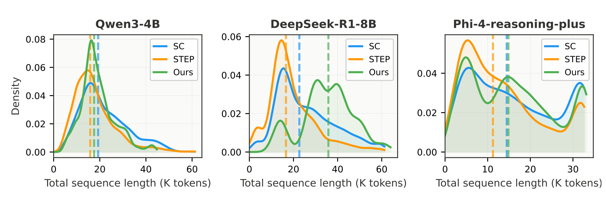
Figure 8 把继承前缀重新算回 total sequence length。此时绿色不再普遍左移：DeepSeek 上 Gambit 中位数约 35.8K，STEP 约 16.5K；Phi-4 的 Gambit 也在中长区间保留更多质量。原因不是分叉机制让单条模型固有地“思考更久”，而是 STEP 把许多低分轨迹提前终止，完成集合天然偏向短序列；Gambit 删除后补回，使更多高分前缀有机会走到深处。长幸存轨迹受自回归串行解码限制，所以总 token 可因共享下降 68.5%，墙钟却不会同比下降。Figure 7 与 Figure 8 必须成对读：前者解释算力复用，后者解释尾延迟。
这里的右移反映完成集合的幸存者构成变化，并不表示 Gambit 修改了基础模型单步解码规则。
3.4 评分器泛化与前缀信号可靠性
附录将 STEP 的逐步 MLP 换成方法章所述 history-aware SeqScorer，再让 STEP 与 Gambit 共用它。这个实验不是为了证明新 scorer 本身一定最好，而是检查主动分叉的优势是否只依赖某个特定信号。若相同的历史感知信号仍在 Gambit 中转化为更高准确率，就说明“评价一个前缀”和“利用这个评价去创造新轨迹”是两个独立环节。
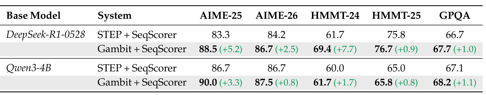
Table 2 中，DeepSeek-R1-8B 的 Gambit+SeqScorer 相对 STEP+SeqScorer 在 AIME-25/26 分别 +5.2/+2.5，HMMT-24 达 +7.7，HMMT-25 与 GPQA 也为正；Qwen3-4B 的五项提升为 +3.3、+0.8、+1.7、+0.8、+1.1。这里最有信息量的是同一个 scorer 输入到两种拓扑后差距仍普遍为正：负向过滤只能留下已存在的好轨迹，主动 search 能让高分前缀产生新的候选。不过表格没有报告重复运行方差或置信区间，1 个百分点以内的差距不能过度解读为稳定显著；+7.7 一类大差距更值得进一步复现。
表中灰色 Gambit 行括号内的增益均以同一基础模型、同一 SeqScorer 的 STEP 行为参照。
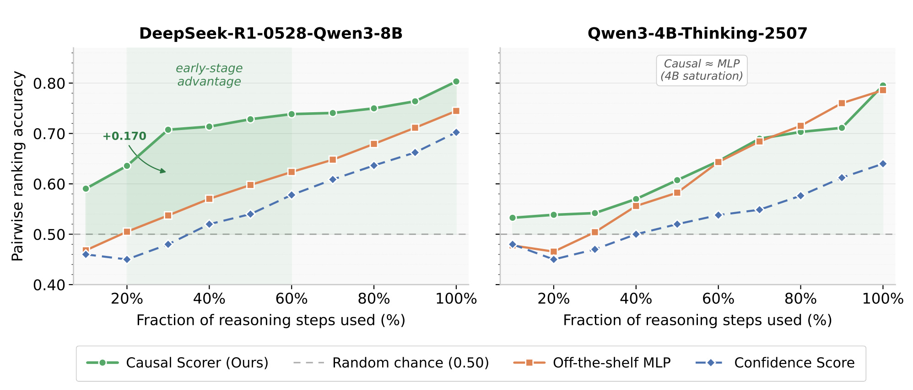
Figure 9 按已使用 reasoning steps 比例考察正确/错误轨迹的 pairwise ranking。DeepSeek 上绿色 causal scorer 从早期约 0.59 持续升到 0.80，20% 附近比现成 MLP 高约 0.17，说明完整历史对早期区分有帮助。Qwen3-4B 上绿色和橙色后期几乎重合，图中标注 4B saturation，意味着更复杂 scorer 并非总有增益。10%-20% 区域部分曲线接近甚至低于随机 0.5，正好支持 $w$ 的必要性：过早 tournament 会把噪声排序当成可靠价值函数。该图也暴露式 (7) 的外推风险——末位标签训练的模型在短前缀上并不天然校准。
灰色虚线 0.5 是随机排序基准，曲线只有稳定越过它后才适合承担分叉路由信号。
3.5 控制开销、超参数与逐项延迟边界
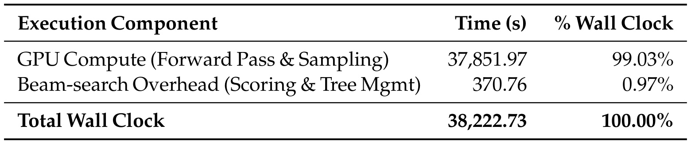
Table 3 在 Qwen3-4B、AIME-26、$N=256$ 下把 38,222.73 秒总墙钟拆开：前向与采样占 37,851.97 秒，即 99.03%；scoring 与 tree management 共 370.76 秒，即 0.97%。正文进一步说其中约 0.60% 来自向 reward-model worker 传隐藏状态并取回分数的 RPC 同步，0.25% 是树排序和 prune/branch 命令，0.12% 是持续调度与垃圾回收。这说明当前单卡实现的控制面不是主要瓶颈，但它只是一种模型、一个基准的分解；多机 scorer、较小基础模型或更频繁 tournament 下，通信占比可能不同。
表中百分比全部以总墙钟时间为分母，而不是以控制面时间为分母。
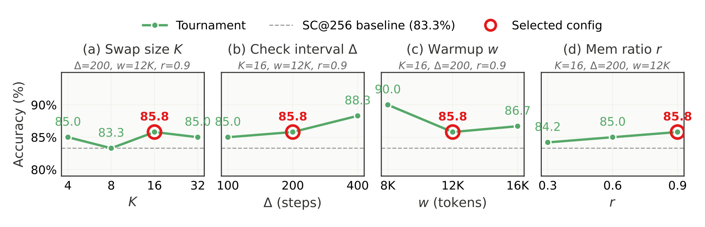
Figure 10 固定 DeepSeek-R1-8B/AIME-25，红圈配置为 $K=16,\Delta=200,w=12K,r=0.9$。交换规模从 4 到 32 时准确率先降、后升、再略降，过小无法刷新低质池，过大则可能破坏稳定路径；检查间隔 100/200/400 对应 85.0/85.8/88.3，论文仍选 200，说明配置选择还考虑调度与跨任务统一，而非只挑此题最高点。warmup 8K/12K/16K 为 90.0/85.8/86.7，也不是单调；显存比例从 0.3 到 0.9 整体改善。四面板均高于 83.3% SC 虚线，支持存在宽阔可用区，但“稳健”不等于每个参数都不敏感，8K 与 12K 的 4.2 点差距仍值得关注。
红圈表示跨任务统一采用的配置，不是四个面板各自的峰值。
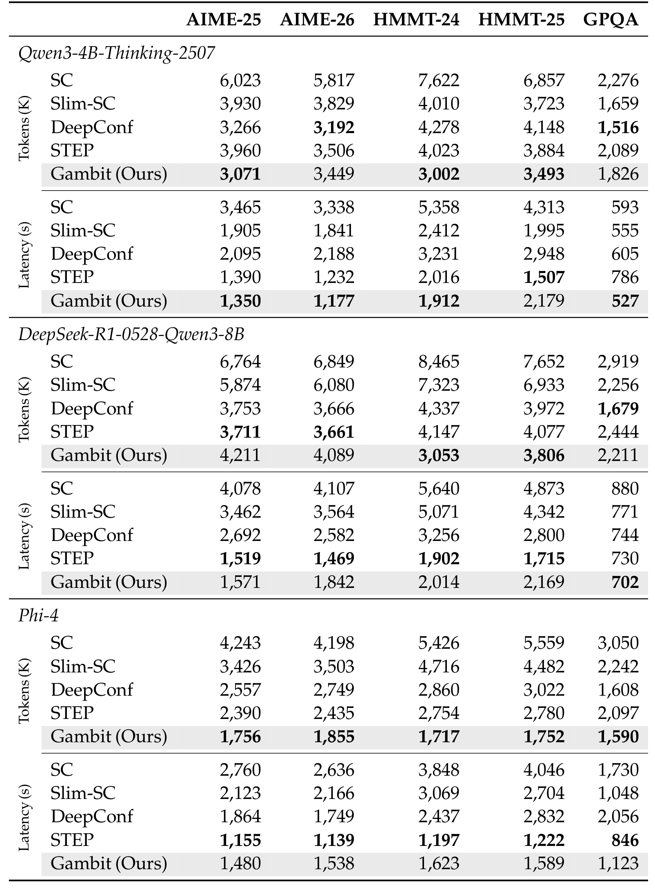
Table 4 给出汇总图背后的原始秒数。Qwen3-4B 上 Gambit 在 AIME-25/26、HMMT-24 和 GPQA 都快于 STEP，例如 AIME-26 是 1,177s 对 1,232s；HMMT-25 则是 2,179s 对 1,507s。DeepSeek 上 Gambit 五项都没有全面压过 STEP：AIME-26 为 1,842s 对 1,469s，HMMT-25 为 2,169s 对 1,715s，但 GPQA 702s 略快于 730s。Phi-4 上 STEP 的五项延迟都更低，而 Gambit 的 token 与准确率更有优势。由此应把论文贡献表述为准确率、token、完成吞吐与显存约束的联合前沿，不能简化成“任何场景都降低延迟”。
3.6 运行案例：分叉如何修复父轨迹的最后一步错误
附录 A.5 打开 AIME-25 Q12 的一棵真实 tournament tree：共 1,595 个节点，其中 256 个 root、1,339 个后续分支、1,083 条被剪、256 条完成，42 条完成轨迹答对 204。加权投票中 204 的总分 24.02，超过第二名 21.81。作为对照，同模型的 SC@512 消耗约 21M token、15K 秒仍失败，512 条里只有 34 条答 204，错误答案 4873 以 90 票获胜。这个例子强调，增加独立样本不能保证多数分布穿过错误模式。
高分父轨迹 $\tau_p$ 已推到正确主体，却在收尾把初始圆盘区域漏掉，得到 $3+25\times8=203$。从它约 30K token 处生成的孩子 $\tau_B$ 继承 31,404 token，只新增 3,649 token；它用“只画两条直径时应有四个区域”的小规模 sanity check 找到缺失的初始 $+1$，改成 $1+203=204$，并以 $\bar s=0.632$ 成为完成轨迹中的最高分。案例非常贴合 Gambit 的设计：父前缀的大部分推导可复用，后期孩子承担低边际成本的纠错。它仍只是单题案例，不能证明分叉普遍修复错误；若父前缀早已走错，共享反而会复制缺陷。
4. 总结
4.1 我的判断
Gambit 最有价值的贡献不是发明了又一种 scorer，而是把测试时推理的算法动作与 serving 约束对齐：在固定 $C$ 下，bottom-$K$ prune 和 top-$K$ branch 同步发生，逻辑树与物理 KV 调度解耦，孩子复用父前缀，最终再用轨迹分数聚合答案。主实验让 STEP 与 Gambit 使用同一 MLP scorer，附录又换成 history-aware SeqScorer，两组都显示主动重投计算比只做减法更能把指导信号变成正确轨迹。证据最强的结论是 token 与完成吞吐：最高 -68.5% token，Qwen3-4B 完成轨迹吞吐超过 STEP 2×；延迟则应保守描述为“总体有竞争力”，因为逐项表里存在明显落后。
对大模型推理系统而言，这篇论文提示“采样预算”不应只暴露为 $n$ 或总 token，还应暴露逻辑容量、物理 KV 水位、checkpoint 成熟度、替换规模与分支相关性。对推荐/搜索系统也有可迁移的调度思想：当候选生成或 agent rollout 很昂贵时，可用中途质量信号把释放的 slot 重投到高潜力 prefix，而不是只 early-stop；但前提是 prefix state 可以廉价复用，且在线目标能在未完成轨迹上提供足够校准的信号。
4.2 局限与风险
- scorer 误杀与反馈放大。 部分前缀的排名在早期接近随机；一旦错误高分前缀进入 top-$K$，分叉会复制同一逻辑缺陷。warmup 降低风险，却无法给出不会误剪正确路径的保证。
- 分支样本相关。 孩子共享长前缀，完成答案不是独立样本；score-weighted vote 的有效样本量小于轨迹条数，论文没有系统报告相关性校正、概率校准或置信区间。
- 系统依赖强。 收益依赖 vLLM 层面对 KV checkpoint、prefix clone、ghost trace 和动态调度的高效支持；在普通 API、不可导出隐藏状态的闭源模型或 KV 复制昂贵的引擎上难以直接复现。
- 任务外推有限。 主证据集中在竞赛数学和 GPQA。开放域 agent 的工具副作用、长工具链恢复、代码执行状态与多轮环境交互不能只靠复制 KV 前缀处理，错误 checkpoint 的回滚成本也更高。
- 实验统计仍不充分。 主表提供准确率点估计，却没有逐次运行方差；超参图在单一模型/基准上完成，部分曲线变化并不平滑。Table 4 还显示 Gambit 在多个模型—任务组合上延迟慢于 STEP。
4.3 复现与后续跟进
- 先复现 Qwen3-4B/AIME-26 的 Table 3 与 Figure 6，同时记录 KV block clone 次数、ghost 存活时间、每轮实际 $N$ 和 scorer RPC 延迟；否则只复现准确率，无法验证系统主张。
- 对 $w$ 与 scorer 校准做联合实验：按前缀深度画 reliability curve、误剪正确轨迹率和分支相关系数，再比较固定 warmup、置信度门控与不确定性保留策略。
- 将 weighted vote 与去相关聚合比较，例如按共同祖先给同簇孩子降权，检查完成轨迹数翻倍后有效样本量是否真的增加。
- 在代码推理或可回放 agent 任务上测试“晚分叉修复”，明确哪些环境状态可以随 prefix checkpoint 复制、哪些工具调用不能回滚，并单独计量错误分叉的外部成本。
总体看，Gambit 让“把更多算力给推理”变成了一个可执行的在线资源分配问题：评价前缀、重投空槽、复用 KV、维持并发与聚合答案形成闭环。它已经给出有说服力的数学推理与单卡 serving 证据，但距离通用部署仍需要解决 scorer 校准、相关样本统计和跨引擎状态复用三项基础问题。